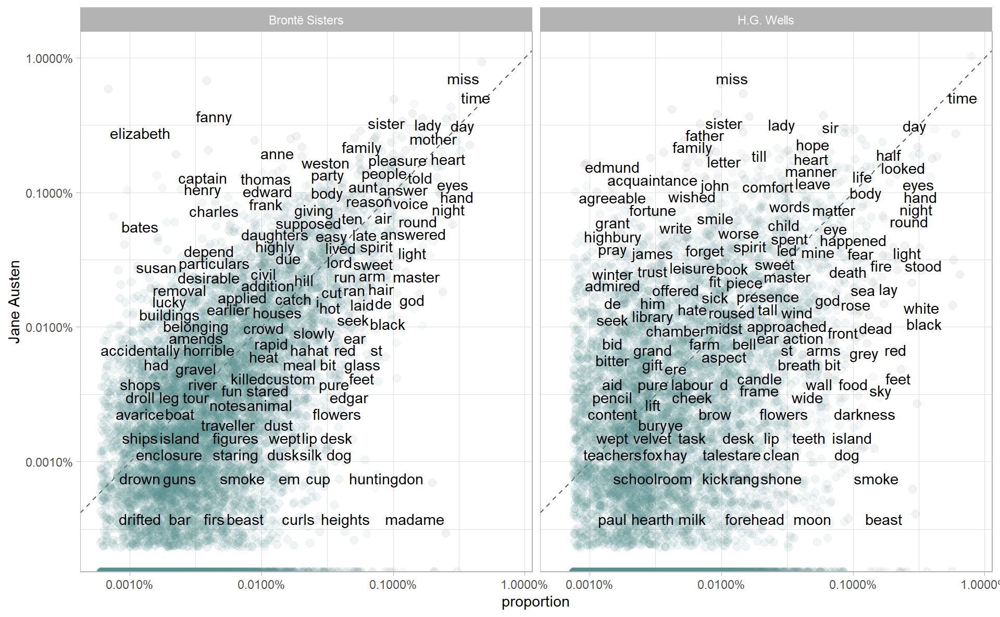

1.3 Compare word frequency
As a common task in text analysis, compariosn of word frequencies is often employed as a tool to extract linguistic characteristics. A rule of thumb is to compare word proportions instead of raw counts.
In this example, we compare novels of Jane Austen, H.G. Wells, and the Bronte Sisters.
austen <- austen_books() %>%
select(-book) %>%
mutate(author = "Jane Austen")
bronte <- gutenberg_download(c(1260, 768, 969, 9182, 767)) %>%
select(-gutenberg_id) %>%
mutate(author = "Brontë Sisters")
hgwells <- gutenberg_download(c(35, 36, 5230, 159)) %>%
select(-gutenberg_id) %>%
mutate(author = "H.G. Wells")
tidy_book <- function(author) {
author %>%
unnest_tokens(word, text) %>%
anti_join(stop_words)
}
books <- bind_rows(tidy_book(austen),
tidy_book(bronte),
tidy_book(hgwells)) %>%
mutate(word = str_extract(word, "[:alpha:]+")) %>%
count(author, word, sort = TRUE)books
#> # A tibble: 46,956 x 3
#> author word n
#> <chr> <chr> <int>
#> 1 Jane Austen miss 1860
#> 2 Jane Austen time 1339
#> 3 Brontë Sisters time 1065
#> 4 Jane Austen fanny 977
#> 5 Jane Austen emma 866
#> 6 Jane Austen sister 865
#> # ... with 4.695e+04 more rowsNow, our goal is to use Jane Austen as a reference to which the other two authors are compared to in terms of word frequency. The data manipulation requires a bit trick, after computing proportions of word usage, we first pivot_wider three authors altogether, an then pivot_wider the other two authors back.
comparison_df <- books %>%
add_count(author, wt = n, name = "total_word") %>%
mutate(proportion = n / total_word) %>%
select(-total_word, -n) %>%
pivot_wider(names_from = author, values_from = proportion,
values_fill = list(proportion = 0)) %>%
pivot_longer(3:4, names_to = "other", values_to = "proportion")
comparison_df
#> # A tibble: 56,002 x 4
#> word `Jane Austen` other proportion
#> <chr> <dbl> <chr> <dbl>
#> 1 miss 0.00855 Brontë Sisters 0.00342
#> 2 miss 0.00855 H.G. Wells 0.000120
#> 3 time 0.00615 Brontë Sisters 0.00424
#> 4 time 0.00615 H.G. Wells 0.00682
#> 5 fanny 0.00449 Brontë Sisters 0.0000438
#> 6 fanny 0.00449 H.G. Wells 0
#> # ... with 5.6e+04 more rowslibrary(scales)
comparison_df %>%
filter(proportion > 1 / 1e5) %>%
ggplot(aes(proportion, `Jane Austen`)) +
geom_abline(color = "gray40", lty = 2) +
geom_jitter(aes(color = abs(`Jane Austen` - proportion)),
alpha = 0.1, size = 2.5, width = 0.3, height = 0.3) +
geom_text(aes(label = word), check_overlap = TRUE, vjust = 1.5) +
scale_x_log10(labels = percent_format()) +
scale_y_log10(labels = percent_format()) +
scale_color_gradient(limits = c(0, 0.001), low = "darkslategray4", high = "gray75") +
facet_wrap(~ other) +
guides(color = FALSE)
Words that are close to the line in these plots have similar frequencies in both sets of texts, for example, in both Austen and Brontë texts (“miss”, “time”, “day” at the upper frequency end) or in both Austen and Wells texts (“time”, “day”, “brother” at the high frequency end). Words that are far from the line are words that are found more in one set of texts than another. For example, in the Austen-Brontë panel, words like “elizabeth”, “emma”, and “fanny” (all proper nouns) are found in Austen’s texts but not much in the Brontë texts, while words like “arthur” and “dog” are found in the Brontë texts but not the Austen texts. In comparing H.G. Wells with Jane Austen, Wells uses words like “beast”, “guns”, “feet”, and “black” that Austen does not, while Austen uses words like “family”, “friend”, “letter”, and “dear” that Wells does not.
Notice that the words in the Austen-Brontë panel are closer to the zero-slope line than in the Austen-Wells panel. Also notice that the words extend to lower frequencies in the Austen-Brontë panel; there is empty space in the Austen-Wells panel at low frequency. These characteristics indicate that Austen and the Brontë sisters use more similar words than Austen and H.G. Wells. Also, we see that not all the words are found in all three sets of texts and there are fewer data points in the panel for Austen and H.G. Wells.
Furhter, we can conduct a simple correlation test
cor.test(data = filter(comparison_df, other == "Brontë Sisters"),
~ proportion + `Jane Austen`)
#>
#> Pearson's product-moment correlation
#>
#> data: proportion and Jane Austen
#> t = 169, df = 27999, p-value <0.0000000000000002
#> alternative hypothesis: true correlation is not equal to 0
#> 95 percent confidence interval:
#> 0.705 0.716
#> sample estimates:
#> cor
#> 0.711
cor.test(data = filter(comparison_df, other == "H.G. Wells"),
~ proportion + `Jane Austen`)
#>
#> Pearson's product-moment correlation
#>
#> data: proportion and Jane Austen
#> t = 72, df = 27999, p-value <0.0000000000000002
#> alternative hypothesis: true correlation is not equal to 0
#> 95 percent confidence interval:
#> 0.383 0.403
#> sample estimates:
#> cor
#> 0.393